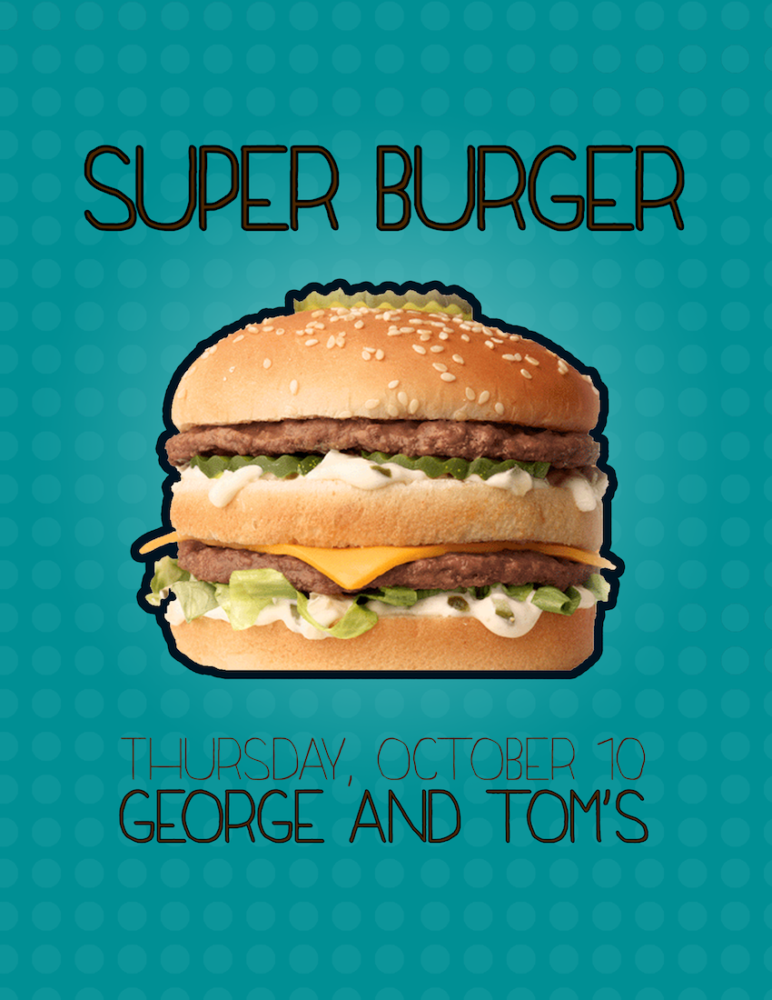
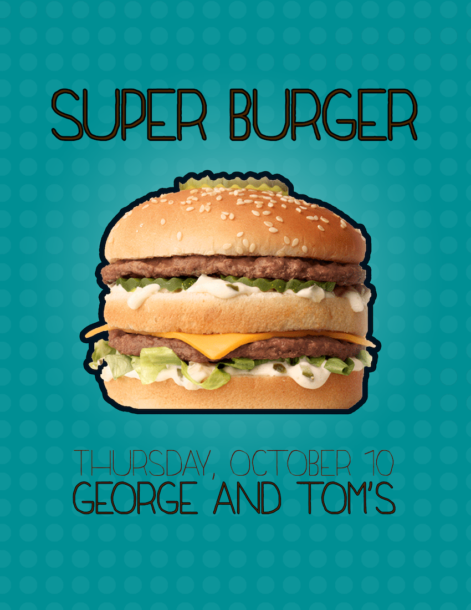

W&J College's dining service, Parkhurst Dining (Eat'n Park), hired me to create advertisements for meal offerings and events, as well as maintain and design a daily menu board.
Project type: Graphic design
Technologies used: Adobe Photoshop CS6, Adobe InDesign
 
